20. Securing the web service for accessing the [dbproduitscategories] database
20.1. Setting up the development environment
We will implement web service security using the following projects:
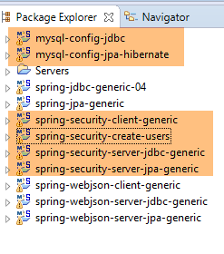 |
- the [spring-security-*] projects can be found in the [<examples>\spring-database-generic\spring-security] folder;
- Security will be implemented for the MySQL DBMS using a [DAO / JDBC] layer followed by a [DAO / JPA / Hibernate] layer;
- Press Alt-F5 and then regenerate all Maven projects;
We need to create users in the [dbproduitscategories] database. To do this, use the [spring-security-create-users-hibernate-eclipselink] run configuration:
 |  |
Running this configuration populates the [USERS, ROLES, USERS_ROLES] tables in the [dbproduitscategories] database:
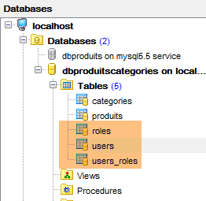 |
 |
The created credentials [login/passwd] are as follows: [admin/admin], [user/user], [guest/guest]. In the database, passwords are encrypted.
 |

Once this is done, run the test configuration named [spring-security-server-jpa-generic-hibernate-eclipselink], which launches the secure web service (MySQL must be running):
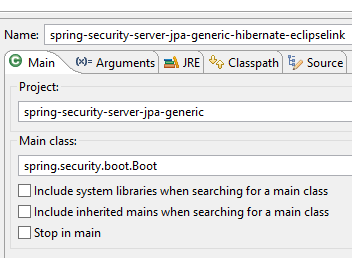 | 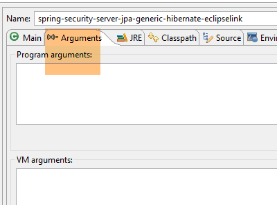 |
Then run the test configuration named [spring-security-client-generic-JUnitTestDao], which tests the secure web service:
 |  |
The test should pass.
20.2. The Eclipse project [spring-security-server-jdbc-generic]
The secure web service is implemented by the [spring-security-server-jdbc-generic] project:
 |
Above:
- The [DAO1] layer is the [DAO] layer that manages the [PRODUCTS] and [CATEGORIES] tables in the [dbproduitscategories] database. It has already been written;
- The [DAO2] layer is the [DAO] layer that manages the [USERS], [ROLES], and [USERS_ROLES] tables in the [dbproduitscategories] database. It has yet to be written;
 |
20.2.1. The Maven configuration
The [spring-security-server-jdbc-generic] project is a Maven project configured by the following [pom.xml] file:
<project xmlns="http://maven.apache.org/POM/4.0.0" xmlns:xsi="http://www.w3.org/2001/XMLSchema-instance"
xsi:schemaLocation="http://maven.apache.org/POM/4.0.0 http://maven.apache.org/xsd/maven-4.0.0.xsd">
<modelVersion>4.0.0</modelVersion>
<groupId>dvp.spring.database</groupId>
<artifactId>spring-security-server-jdbc-generic</artifactId>
<version>0.0.1-SNAPSHOT</version>
<name>spring-security-server-jdbc-generic</name>
<description>Spring Security demo</description>
<properties>
<project.build.sourceEncoding>UTF-8</project.build.sourceEncoding>
<java.version>1.7</java.version>
</properties>
<parent>
<groupId>org.springframework.boot</groupId>
<artifactId>spring-boot-starter-parent</artifactId>
<version>1.2.3.RELEASE</version>
</parent>
<dependencies>
<!-- Spring Security -->
<dependency>
<groupId>org.springframework.boot</groupId>
<artifactId>spring-boot-starter-security</artifactId>
</dependency>
<!-- Web server / JSON -->
<dependency>
<groupId>dvp.spring.database</groupId>
<artifactId>spring-webjson-server-jdbc-generic</artifactId>
<version>0.0.1-SNAPSHOT</version>
</dependency>
</dependencies>
<!-- plugins -->
<build>
<plugins>
<plugin>
<groupId>org.apache.maven.plugins</groupId>
<artifactId>maven-surefire-plugin</artifactId>
<version>2.18.1</version>
</plugin>
</plugins>
</build>
</project>
- lines 29–33: we reuse the existing code with the web service / json / jdbc archive we examined;
- lines 24–27: the dependency that brings in the Spring Security classes;
Ultimately, the project has the following dependencies on the other projects loaded into Eclipse:
 |
20.2.2. The [DAO2] layer
 |
Above:
- The [DAO1] layer is the [DAO] layer that manages the [PRODUCTS] and [CATEGORIES] tables in the [dbproduitscategories] database. It has already been written;
- The [DAO2] layer is the [DAO] layer that manages the [USERS], [ROLES], and [USERS_ROLES] tables in the [dbproduitscategories] database. This is the one we are going to write now;
 |
Spring Security requires the creation of a class that implements the following [UsersDetail] interface:
 |
This interface is implemented here by the [AppUserDetails] class:
package spring.security.dao;
import generic.jdbc.config.ConfigJdbc;
import java.sql.ResultSet;
import java.sql.SQLException;
import java.util.ArrayList;
import java.util.Collection;
import java.util.Collections;
import java.util.List;
import org.springframework.jdbc.core.RowMapper;
import org.springframework.jdbc.core.namedparam.NamedParameterJdbcTemplate;
import org.springframework.security.core.GrantedAuthority;
import org.springframework.security.core.authority.SimpleGrantedAuthority;
import org.springframework.security.core.userdetails.UserDetails;
import spring.jdbc.entities.Role;
import spring.jdbc.entities.User;
import spring.jdbc.infrastructure.DaoException;
public class AppUserDetails implements UserDetails {
private static final long serialVersionUID = 1L;
// JdbcTemplate
private NamedParameterJdbcTemplate namedParameterJdbcTemplate;
// properties
private User user;
private String simpleClassName = getClass().getSimpleName();
// constructors
public AppUserDetails() {
}
public AppUserDetails(User user, NamedParameterJdbcTemplate namedParameterJdbcTemplate) {
this.user = user;
this.namedParameterJdbcTemplate = namedParameterJdbcTemplate;
}
// -------------------------interface
@Override
public Collection<? extends GrantedAuthority> getAuthorities() {
Collection<GrantedAuthority> authorities = new ArrayList<>();
for (Role role : getRoles(user.getId())) {
authorities.add(new SimpleGrantedAuthority(role.getName()));
}
return authorities;
}
...
// private methods----------------
private List<Role> getRoles(Long id) {
try {
// search for the user by ID
return namedParameterJdbcTemplate.query(ConfigJdbc.SELECT_ROLES_BYUSERID, Collections.singletonMap("id", id), new ShortRoleMapper());
} catch (Exception e) {
//e.printStackTrace();
throw new DaoException(167, e, simpleClassName);
}
}
}
// --------------------- mappers
class ShortRoleMapper implements RowMapper<Role> {
@Override
public Role mapRow(ResultSet rs, int rowNum) throws SQLException {
return new Role(rs.getLong("r_ID"), rs.getLong("r_VERSIONING"), rs.getString("r_NAME"));
}
}
- line 22: the [AppUserDetails] class implements the [UserDetails] interface;
- lines 29-30: the class encapsulates a user (line 19) and the repository that provides details about that user (line 20);
- line 27: the database will be accessed via JDBC using the [NamedParameterJdbcTemplate namedParameterJdbcTemplate] object defined in the [spring-jdbc-generic-04] project. Note that this object is not injected by Spring as is often done. It is provided to the constructor in lines 36–39. Why? Because the [AppUserDetails] class is not a Spring component (it lacks the @Component annotation) and therefore cannot be injected;
- lines 36–39: the constructor that instantiates the class with a user and its repository;
- Lines 42–49: Implementation of the [getAuthorities] method of the [UserDetails] interface. It must construct a collection of elements of type [GrantedAuthority] or a derived type. Here, we use the derived type [SimpleGrantedAuthority] (line 46), which encapsulates the name of one of the user’s roles from line 29;
- lines 45–47: we iterate through the list of the user’s roles from line 29 to build a list of elements of type [SimpleGrantedAuthority];
- line 45: to obtain the user’s roles, we use the private method [getRoles] from line 53;
- line 56: executes the following SQL statement [ConfigJdbc.SELECT_ROLES_BYUSERID] (defined in [ConfigJdbc]):
public static final String SELECT_ROLES_BYUSERID = "SELECT DISTINCT r.ID as r_ID, r.VERSIONING as r_VERSIONING, r.NAME as r_NAME FROM ROLES r, USERS u, USERS_ROLES ur WHERE u.ID=:id AND ur.USER_ID=u.ID AND ur.ROLE_ID=r.ID";
This SQL query performs a join between the three tables [USERS, ROLES, USERS_ROLES] to retrieve the roles of a user identified by their primary key. It is parameterized by the primary key [:id] of the user whose roles are being queried.
- line 56: each result row from the [SELECT] is converted into a [Role] entity by the [ShortRowMapper] class in lines 66–72;
Let’s return to the code for the [AppUserDetails] class:
package spring.security.dao;
...
public class AppUserDetails implements UserDetails {
private static final long serialVersionUID = 1L;
// JdbcTemplate
private NamedParameterJdbcTemplate namedParameterJdbcTemplate;
// properties
private User user;
private String simpleClassName = getClass().getSimpleName();
// constructors
public AppUserDetails() {
}
public AppUserDetails(User user, NamedParameterJdbcTemplate namedParameterJdbcTemplate) {
this.user = user;
this.namedParameterJdbcTemplate = namedParameterJdbcTemplate;
}
// -------------------------interface
@Override
public Collection<? extends GrantedAuthority> getAuthorities() {
Collection<GrantedAuthority> authorities = new ArrayList<>();
for (Role role : getRoles(user.getId())) {
authorities.add(new SimpleGrantedAuthority(role.getName()));
}
return authorities;
}
@Override
public String getPassword() {
return user.getPassword();
}
@Override
public String getUsername() {
return user.getLogin();
}
@Override
public boolean isAccountNonExpired() {
return true;
}
@Override
public boolean isAccountNonLocked() {
return true;
}
@Override
public boolean isCredentialsNonExpired() {
return true;
}
@Override
public boolean isEnabled() {
return true;
}
// getters and setters
...
}
- lines 35–37: implement the [getPassword] method of the [UserDetails] interface. We return the user’s password from line 12;
- lines 39–42: implement the [getUserName] method of the [UserDetails] interface. We return the user’s login from line 12;
- lines 44–47: the user’s account never expires;
- lines 49–52: the user’s account is never locked;
- lines 54–57: the user’s credentials never expire;
- lines 59–62: the user’s account is always active;
Spring Security also requires the existence of a class that implements the [AppUserDetailsService] interface:
 |
This interface is implemented by the following [AppUserDetailsService] class:
package spring.security.dao;
import generic.jdbc.config.ConfigJdbc;
import java.sql.ResultSet;
import java.sql.SQLException;
import java.util.Collections;
import java.util.List;
import org.springframework.beans.factory.annotation.Autowired;
import org.springframework.jdbc.core.RowMapper;
import org.springframework.jdbc.core.namedparam.NamedParameterJdbcTemplate;
import org.springframework.security.core.userdetails.UserDetails;
import org.springframework.security.core.userdetails.UserDetailsService;
import org.springframework.security.core.userdetails.UsernameNotFoundException;
import org.springframework.stereotype.Service;
import spring.jdbc.entities.User;
import spring.jdbc.infrastructure.DaoException;
@Service
public class AppUserDetailsService implements UserDetailsService {
// injections
@Autowired
private NamedParameterJdbcTemplate namedParameterJdbcTemplate;
// local
private String simpleClassName = getClass().getSimpleName();
@Override
public UserDetails loadUserByUsername(String login) throws UsernameNotFoundException {
List<User> users;
try {
// search for the user by their login
users = namedParameterJdbcTemplate.query(ConfigJdbc.SELECT_USER_BYLOGIN,
Collections.singletonMap("login", login), new ShortUserMapper());
} catch (Exception e) {
throw new DaoException(145, e, simpleClassName);
}
// Found?
if (users.size() == 0) {
throw new UsernameNotFoundException(String.format("login [%s] does not exist", login));
}
// return the user details
return new AppUserDetails(users.get(0), namedParameterJdbcTemplate);
}
}
// --------------------- mappers
class ShortUserMapper implements RowMapper<User> {
@Override
public User mapRow(ResultSet rs, int rowNum) throws SQLException {
return new User(rs.getLong("u_ID"), rs.getLong("u_VERSIONING"), rs.getString("u_NAME"), rs.getString("u_LOGIN"),
rs.getString("u_PASSWORD"));
}
}
- line 21: the class will be a Spring component;
- lines 25-26: the database will be accessed via JDBC using the [NamedParameterJdbcTemplate] object defined in the beans of the [spring-jdbc-generic-04] project;
- lines 31-49: implementation of the [loadUserByUsername] method of the [UserDetailsService] interface (line 22). The parameter is the user’s login;
- lines 36–37: the user is searched for by their login. The SQL statement [ConfigJdbc.SELECT_USER_BYLOGIN] is as follows:
public static final String SELECT_USER_BYLOGIN = "SELECT u.ID as u_ID, u.VERSIONING as u_VERSIONING, u.NAME as u_NAME, u.LOGIN as u_LOGIN, u.PASSWORD as u_PASSWORD FROM USERS u WHERE u.LOGIN= :login";
Each row returned by the SELECT statement is converted into a [User] entity by the [ShortUserMapper] class in lines 52–58.
- Lines 42–44: If it is not found, an exception is thrown;
- line 46: an [AppUserDetails] object is constructed and returned. It is indeed of type [UserDetails] (line 32). Two pieces of information are passed to its constructor:
 |
The [spring-security-server-jdbc-generic] project depends on the [spring-webjson-server-jdbc-generic] project:
|
This project implements the [web] layer. It does not need to be modified.
20.2.4. Project security configuration
 |
The project is configured by the following [AppConfig] class:
1  |
We have already encountered a Spring Security configuration class (see Section 19.2.4):
package hello;
import org.springframework.context.annotation.Configuration;
import org.springframework.security.config.annotation.authentication.builders.AuthenticationManagerBuilder;
import org.springframework.security.config.annotation.web.builders.HttpSecurity;
import org.springframework.security.config.annotation.web.configuration.WebSecurityConfigurerAdapter;
import org.springframework.security.config.annotation.web.servlet.configuration.EnableWebMvcSecurity;
@Configuration
@EnableWebMvcSecurity
public class WebSecurityConfig extends WebSecurityConfigurerAdapter {
@Override
protected void configure(HttpSecurity http) throws Exception {
http.authorizeRequests().antMatchers("/", "/home").permitAll().anyRequest().authenticated();
http.formLogin().loginPage("/login").permitAll().and().logout().permitAll();
}
@Override
protected void configure(AuthenticationManagerBuilder auth) throws Exception {
auth.inMemoryAuthentication().withUser("user").password("password").roles("USER");
}
}
We will follow the same procedure:
- line 11: define a class that extends the [WebSecurityConfigurerAdapter] class;
- line 13: define a method [configure(HttpSecurity http)] that defines access rights to the various URLs of the web service;
- line 19: define a method [configure(AuthenticationManagerBuilder auth)] that defines users and their roles;
The [AppConfig] class will be as follows:
package spring.security.config;
import org.springframework.beans.factory.annotation.Autowired;
import org.springframework.context.annotation.ComponentScan;
import org.springframework.context.annotation.Configuration;
import org.springframework.context.annotation.Import;
import org.springframework.http.HttpMethod;
import org.springframework.security.config.annotation.authentication.builders.AuthenticationManagerBuilder;
import org.springframework.security.config.annotation.web.builders.HttpSecurity;
import org.springframework.security.config.annotation.web.configuration.EnableWebSecurity;
import org.springframework.security.config.annotation.web.configuration.WebSecurityConfigurerAdapter;
import org.springframework.security.crypto.bcrypt.BCryptPasswordEncoder;
import spring.security.dao.AppUserDetailsService;
import spring.webjson.server.config.WebConfig;
@Configuration
@EnableWebSecurity
@ComponentScan(basePackages = { "spring.security.dao", "spring.security.service" })
@Import({ spring.webjson.server.config.AppConfig.class, WebConfig.class })
public class AppConfig extends WebSecurityConfigurerAdapter {
@Autowired
private AppUserDetailsService appUserDetailsService;
// Security
private boolean activateSecurity = true;
@Override
protected void configure(AuthenticationManagerBuilder registry) throws Exception {
// Authentication is handled by the [appUserDetailsService] bean
// the password is encrypted using the BCrypt hashing algorithm
registry.userDetailsService(appUserDetailsService).passwordEncoder(new BCryptPasswordEncoder());
}
@Override
protected void configure(HttpSecurity http) throws Exception {
// CSRF
http.csrf().disable();
// Is the application secure?
if (securityEnabled) {
// The password is sent via the Authorization: Basic xxxx header
http.httpBasic();
// The HTTP OPTIONS method must be allowed for all
http.authorizeRequests() //
.antMatchers(HttpMethod.OPTIONS, "/", "/**").permitAll();
// Only the ADMIN role can use the application
http.authorizeRequests() //
.antMatchers("/", "/**") // all URLs
.hasRole("ADMIN");
// session or not?
//http.sessionManagement().sessionCreationPolicy(SessionCreationPolicy.STATELESS);
}
}
}
- line 17: the class is a Spring configuration class;
- line 18: enables Spring Security components;
- line 26: we retrieve the Spring components from the [DAO2] layer and those from the [spring.security.service] package, which we will discuss later;
- line 23: imports the beans from the [spring-webjson-server-jdbc-generic] project, which implements the [web] layer. Among these beans are also those from the [DAO1] layer;
- lines 22–23: the [AppUserDetails] class, which provides access to the application’s users, is injected;
- line 26: a boolean that secures (true) or does not secure (false) the web application;
- lines 28–33: the [configure(HttpSecurity http)] method defines users and their roles. It takes an [AuthenticationManagerBuilder] as a parameter. This parameter is enriched with two pieces of information (line 32):
- a reference to the [appUserDetailsService] from line 23, which provides access to registered users. Note here that the fact that they are stored in a database is not explicitly stated. They could therefore be in a cache, delivered by a web service, etc.
- the encryption type used for the password. We used the BCrypt algorithm;
- lines 35–53: the [configure(HttpSecurity http)] method defines access rights to the web service’s URLs;
- line 38: we saw in the introductory project that by default Spring Security manages a CSRF (Cross-Site Request Forgery) token that the user wishing to authenticate must send back to the server. Here, this mechanism is disabled. This, combined with the boolean (isSecured=false), allows the web application to be used without security;
- line 42: we enable authentication via HTTP headers. The client must send the following HTTP header:
Authorization:Basic code
where code is the Base64 encoding of the login:password string. For example, the Base64 encoding of the string admin:admin is YWRtaW46YWRtaW4=. Therefore, a user with the login [admin] and password [admin] will send the following HTTP header to authenticate:
Authorization:Basic YWRtaW46YWRtaW4=
- Lines 47–49: indicate that all URLs of the web service are accessible to users with the [ROLE_ADMIN] role. This means that a user without this role cannot access the web service;
- Line 51: In [session] mode, a user who has authenticated once does not need to do so for subsequent accesses. This is the default setting for Spring Security. Line 51 disables this mode. If enabled, the user must authenticate with every access. Without a session, the secure web service is less responsive than with a session, so line 51 has been commented out; ### 20.2.5. Testing the secure web service
We will test the web service using the Chrome client [Advanced Rest Client]. We will need to specify the HTTP authentication header:
where [code] is the Base64-encoded string [login:password]. To generate this code, you can use the following program from the [spring-security-create-users] project:
 |
package spring.security.helpers;
import org.springframework.security.crypto.codec.Base64;
public class Base64Encoder {
public static void main(String[] args) {
// Expects two arguments: login and password
if (args.length != 2) {
System.out.println("Syntax: login password");
System.exit(0);
}
// Retrieve the two arguments
String string = String.format("%s:%s", args[0], args[1]);
// we encode the string
byte[] data = Base64.encode(string.getBytes());
// display its Base64 encoding
System.out.println(new String(data));
}
}
If we run this program with the two arguments [admin admin]:
 |
we get the following result:
YWRtaW46YWRtaW4=
We are now ready for testing:
- the MySQL DBMS must be running;
- we populate the [PRODUCTS] and [CATEGORIES] tables using the execution configuration named [spring-jdbc-generic-04-fillDataBase]:
 |
- if this has not already been done, we populate the [USERS, ROLES, USERS_ROLES] tables using the execution configuration named [spring-security-create-users-hibernate-eclipselink]:
 |
- We launch the secure web service using the runtime configuration named [spring-security-server-jdbc-generic]:
 |
Then, using the Chrome client [Advanced Rest Client], we request the long version of all categories:
 |
- In [1], we request the URL for the long category descriptions;
- in [2], using a GET method;
- in [3], we provide the authentication HTTP header. The code [YWRtaW46YWRtaW4=] is the Base64 encoding of the string [admin:admin];
- in [4], we send the HTTP request;
The server's response is as follows:
 |
- in [1], the HTTP authentication header;
- in [2], the server returns a JSON response;
We successfully obtain the list of categories:
 |
Now let’s try an HTTP request with an incorrect authentication header. The response is then as follows:
 |
- in [1]: the HTTP authentication header;
We receive the following response:
 |
- in [2]: the web service response;
Now, let’s try the user / user. It exists but does not have access to the web service. If we run the Base64 encoding program with the two arguments [user user]:
 |
we get the following result:
dXNlcjp1c2Vy
 |
- in [1]: the incorrect HTTP authentication header;
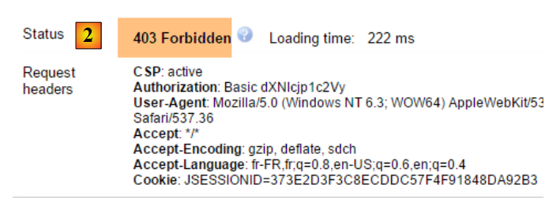 |
- in [2]: the web service response. It differs from the previous one, which was [401 Unauthorized]. This time, the user authenticated correctly but does not have sufficient permissions to access the URL;
A secure web service is now operational.
20.2.6. An authentication URL
 |
We will create a URL that will allow us to determine whether a user is authorized to access the web service. To do this, we create the following new MVC controller [AuthenticateController]:
package spring.security.service;
import org.springframework.web.bind.annotation.RequestMapping;
import org.springframework.web.bind.annotation.RequestMethod;
import org.springframework.web.bind.annotation.RestController;
import spring.webjson.server.service.Response;
@RestController
public class AuthenticateController {
@RequestMapping(value = "/authenticate", method = RequestMethod.GET)
public Response<Void> authenticate() {
return new Response<Void>(0, null, null);
}
}
- line 9: the [AuthenticateController] class is a Spring controller. As such, it exposes URLs. The [@RestController] annotation indicates that the methods handling these URLs return their own responses to the client;
- line 11: exposes the URL [/authenticate];
- lines 12–14: the method simply returns an empty [Response] object but with a [status] equal to 0, indicating that no error occurred;
What is this URL for? When we simply want to authenticate a user, we will request it. We have seen that if the security layer does not accept this user, it throws an exception. Here is an example;
With the user [admin:admin]:
 |  |
We get an empty response but no exception.
With the user [user:user]:
 |  |
We got an exception.
20.2.7. Conclusion
The necessary classes for Spring Security were added without modifying the original web/JSON project. This ideal scenario stems from the fact that the three tables added to the database are independent of the existing tables. We could even have placed them in a separate database. In other cases, the added tables may have relationships with existing tables. The code in the existing [DAO] layer must then be reviewed.
20.3. A client programmed for the secure web/JSON service
We have already written a client for the unsecured web service / JSON:
 |
We will now create a client programmed for the secure web service:
 |
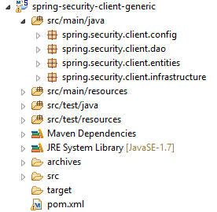 |
20.3.1. The [HTTP Client] layer
 |
 | 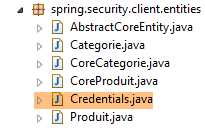 |
The [Client] class handles HTTP communication with the secure / JSON web server. As we have just seen, in this HTTP communication, the client must now send an authentication header, for example:
Authorization:Basic YWRtaW46YWRtaW4=
The [IClient] interface becomes the following:
package spring.webjson.client.dao;
import org.springframework.http.HttpMethod;
import spring.webjson.client.entities.Credentials;
public interface IClient {
public <T1, T2> T1 getResponse(Credentials credentials, String url, HttpMethod method, int errStatus, T2 body);
}
- Line 8: The first parameter of the [getResponse] method is now a [Credentials] object that encapsulates a user's credentials:
package spring.security.client.entities;
public class Credentials {
// properties
private String login;
private String password;
// constructor
public Credentials() {
}
public Credentials(String login, String password) {
this.login = login;
this.password = password;
}
// getters and setters
...
}
The [Client] class, which implements the [IClient] interface, evolves as follows:
package spring.security.client.dao;
...
@Component
public class Client implements IClient {
// injections
@Autowired
protected RestTemplate restTemplate;
@Autowired
protected String webJsonServiceUrl;
// local
private String simpleClassName = getClass().getSimpleName();
private String getBase64(Credentials credentials) {
// Encode the username and password in Base64 - requires Java 8
String string = String.format("%s:%s", credentials.getLogin(), credentials.getPassword());
return String.format("Basic %s", new String(Base64.getEncoder().encode(string.getBytes())));
}
// generic request
@Override
public <T1, T2> T1 getResponse(Credentials credentials, String url, HttpMethod method, int errStatus, T2 body) {
// the server response
ResponseEntity<Response<T1>> response;
try {
// prepare the request
RequestEntity<?> request = null;
if (method == HttpMethod.GET) {
HeadersBuilder<?> headersBuilder = RequestEntity.get(new URI(String.format("%s%s", urlServiceWebJson, url))) .accept(MediaType.APPLICATION_JSON);
if (credentials != null) {
headersBuilder = headersBuilder.header("Authorization", getBase64(credentials));
}
request = headersBuilder.build();
}
if (method == HttpMethod.POST) {
BodyBuilder bodyBuilder = RequestEntity.post(new URI(String.format("%s%s", urlServiceWebJson, url))).header("Content-Type", "application/json").accept(MediaType.APPLICATION_JSON);
if (credentials != null) {
bodyBuilder = bodyBuilder.header("Authorization", getBase64(credentials));
}
request = bodyBuilder.body(body);
}
// execute the request
response = restTemplate.exchange(request, new ParameterizedTypeReference<Response<T1>>() {
});
} catch (Exception e) {
// wrap the exception
throw new DaoException(errStatus, e, simpleClassName);
}
...
}
...
}
- lines 33–35, 40–42: if the user [credentials] is not null, then the authentication header is added. The Base64 encoding of the username and password is handled by the [getBase64] method in lines 17–21. Note that this method uses a [Base64] class from JDK 1.8. Our HTTP client can work with an unsecured web service. Simply pass it a [credentials] equal to null;
- Apart from the preceding lines, the code remains unchanged; ### 20.3.2. The [DAO] layer
 |
20.3.2.1. The [IDao] interface
 |
All methods of the [IDao] interface in the [spring-webjson-client-generic] project receive an additional [Credentials] parameter:
package spring.security.client.dao;
import java.util.List;
import spring.security.client.entities.AbstractCoreEntity;
import spring.security.client.entities.Credentials;
public interface IDao<T extends AbstractCoreEntity> extends IAuthenticate {
// list of all T entities
public List<T> getAllShortEntities(Credentials credentials);
public List<T> getAllLongEntities(Credentials credentials);
// specific entities - short version
public List<T> getShortEntitiesById(Credentials credentials, Iterable<Long> ids);
public List<T> getShortEntitiesById(Credentials credentials, Long... ids);
public List<T> getShortEntitiesByName(Credentials credentials, Iterable<String> names);
public List<T> getShortEntitiesByName(Credentials credentials, String... names);
// specific entities - long version
public List<T> getLongEntitiesById(Credentials credentials, Iterable<Long> ids);
public List<T> getLongEntitiesById(Credentials credentials, Long... ids);
public List<T> getLongEntitiesByName(Credentials credentials, Iterable<String> names);
public List<T> getLongEntitiesByName(Credentials credentials, String... names);
// Update multiple entities
public List<T> saveEntities(Credentials credentials, Iterable<T> entities);
public List<T> saveEntities(Credentials credentials, @SuppressWarnings("unchecked") T... entities);
// Delete all entities
public void deleteAllEntities(Credentials credentials);
// Delete multiple entities
public void deleteEntitiesById(Credentials credentials, Iterable<Long> ids);
public void deleteEntitiesById(Credentials credentials, Long... ids);
public void deleteEntitiesByName(Credentials credentials, Iterable<String> names);
public void deleteEntitiesByName(Credentials credentials, String... names);
public void deleteEntitiesByEntity(Credentials credentials, Iterable<T> entities);
public void deleteEntitiesByEntity(Credentials credentials, @SuppressWarnings("unchecked") T... entities);
}
- Line 8: The [IDao] interface extends the following [IAuthenticate] interface:
package spring.security.client.dao;
import spring.security.client.entities.Credentials;
public interface IAuthenticate {
// authentication
public void authenticate(Credentials credentials);
}
The [IAuthenticate] interface has only a single method, [authenticate]. This method returns nothing (void) if the user [Credentials credentials] is accepted by the secure web service; otherwise, it throws an exception.
20.3.2.2. The [AbstractDao] class
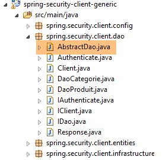 |
Recall that the [AbstractDao] class is the parent class of the [DaoCategorie] classes, which manage category URLs, and the [DaoProduit] class, which manages product URLs. All methods of the [AbstractDao] class in the [spring-webjson-client-generic] project receive an additional parameter [Credentials credentials] that they pass to the child class. Here is an example:
@Override
public List<T1> getShortEntitiesById(Credentials credentials, Iterable<Long> ids) {
// check argument validity
List<T1> entities = checkNullOrEmptyArgument(true, ids);
if (entities != null) {
return entities;
}
// result
return getShortEntitiesById(credentials, Lists.newArrayList(ids));
}
- The [getShortEntitiesById] method receives the [Credentials credentials] parameter (line 2), which it passes (line 9) to the [getShortEntitiesById] method of the child class;
The [AbstractDao] class has the following skeleton:
package spring.security.client.dao;
import java.util.ArrayList;
import java.util.List;
import org.springframework.beans.factory.annotation.Autowired;
import spring.security.client.entities.AbstractCoreEntity;
import spring.security.client.entities.Credentials;
import spring.security.client.infrastructure.MyIllegalArgumentException;
import com.google.common.collect.Lists;
public abstract class AbstractDao<T1 extends AbstractCoreEntity> implements IDao<T1> {
@Autowired
private IAuthenticate authenticate;
...
}
- line 14: the class implements the [IDao] interface we described;
- lines 16–17: an instance of the [IAuthenticate] interface is injected. This is implemented by the following [Authenticate] class:
package spring.security.client.dao;
import org.springframework.beans.factory.annotation.Autowired;
import org.springframework.http.HttpMethod;
import org.springframework.stereotype.Component;
import spring.security.client.entities.Credentials;
@Component
public class Authenticate implements IAuthenticate {
@Autowired
protected IClient client;
// verification [credentials, password]
public void authenticate(Credentials credentials) {
client.<Void, Void> getResponse(credentials, "/authenticate", HttpMethod.GET, 111, (Void) null);
}
}
- line 9: the [Authenticate] class is a Spring component;
- line 10: which implements the [IAuthenticate] interface;
- lines 11–12: injection of the HTTP client that enables communication with the secure web service;
- lines 15–17: implementation of the [authenticate] method of the interface;
- line 16: an HTTP GET request is sent to the URL [/authenticate]. The use of this URL was demonstrated in section 20.2.6. The principle is that the call results in an exception if the user [credentials] is either unknown or lacks sufficient permissions;
The [AbstractDao] class implements the [authenticate] method of the [IDao] interface as follows:
@Autowired
private IAuthenticate authenticate;
@Override
public void authenticate(Credentials credentials) {
authenticate.authenticate(credentials);
}
- Line 7: The task is delegated to the [authenticate] method of the [Authenticate] class. An exception will therefore be thrown if the user [Credentials credentials] is not accepted by the secure web service; #### 20.3.2.3. The [DaoCategorie, DaoProduit] classes
 |
The [DaoCategorie, DaoProduit] classes are those from the [spring-webjson-server-generic] project with the additional parameter [Credentials credentials]. Here is an example:
@Component
public class DaoCategorie extends AbstractDao<Categorie> {
// injections
@Autowired
protected ApplicationContext context;
@Autowired
protected IClient client;
@Override
public List<Category> getAllShortEntities(Credentials credentials) {
try {
// JSON filters
ObjectMapper mapper = context.getBean("jsonMapperShortCategorie", ObjectMapper.class);
// get all categories
Object map = client.<List<Category>, Void> getResponse(credentials, "/getAllShortCategories", HttpMethod.GET,
202, null);
// the list of categories List<Category>
return mapper.readValue(mapper.writeValueAsString(map), new TypeReference<List<Category>>() {
});
} catch (DaoException e1) {
throw e1;
} catch (Exception e2) {
throw new DaoException(221, e2, simpleClassName);
}
}
....
20.3.3. The Spring Configuration
 |
The [AppConfig] class configures the project's Spring environment. It is identical to what it was in the [spring-webjson-client-generic] project, with one exception:
@Configuration
@ComponentScan({ "spring.security.client.dao" })
public class AppConfig {
 |
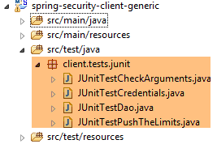 |
20.3.4.1. The [JUnitTestCredentials] test
The [JUnitTestCredentials] test uses the [IDao.authenticate] method to verify the validity of certain users:
package client.tests.junit;
import org.junit.Assert;
import org.junit.BeforeClass;
import org.junit.Test;
import org.junit.runner.RunWith;
import org.springframework.beans.factory.annotation.Autowired;
import org.springframework.boot.test.SpringApplicationConfiguration;
import org.springframework.test.context.junit4.SpringJUnit4ClassRunner;
import spring.security.client.config.AppConfig;
import spring.security.client.dao.IAuthenticate;
import spring.security.client.entities.Credentials;
import spring.security.client.infrastructure.DaoException;
@SpringApplicationConfiguration(classes = AppConfig.class)
@RunWith(SpringJUnit4ClassRunner.class)
public class JUnitTestCredentials {
// [DAO] layer
@Autowired
private IAuthenticate authenticate;
// users
static private Credentials admin;
static private Credentials user;
static private Credentials unknown;
@BeforeClass
public static void init() {
admin = new Credentials("admin", "admin");
user = new Credentials("user", "user");
unknown = new Credentials("x", "y");
}
@Test()
public void checkUserUser() {
DaoException se = null;
try {
authenticate.authenticate(user);
} catch (DaoException e) {
se = e;
System.out.println("checkUserUser: " + e);
}
Assert.assertNotNull(se);
Assert.assertEquals("403 Forbidden", se.getExceptions().get(0).getErrorMessage());
}
@Test()
public void checkUserUnknown() {
DaoException se = null;
try {
authenticate.authenticate(unknown);
} catch (DaoException e) {
se = e;
System.out.println("checkUserUnknown : " + e);
}
Assert.assertNotNull(se);
Assert.assertEquals("401 Unauthorized", se.getExceptions().get(0).getErrorMessage());
}
@Test()
public void checkUserAdmin() {
DaoException se = null;
try {
authenticate.authenticate(admin);
} catch (DaoException e) {
se = e;
System.out.println("checkUserAdmin : " + e);
}
Assert.assertNull(se);
}
}
- During the initialization of the test class, lines 29–34, three users are created:
- the user [admin] has access to the web service URLs. This is tested on lines 63–72;
- the user [user] exists but is not authorized to use the web service URLs. They are tested on lines 37–47;
- the user [unknown] does not exist. They are tested on lines 50–60;
We launch the secure web service with the runtime configuration named [spring-security-server-jdbc-generic] [1]:
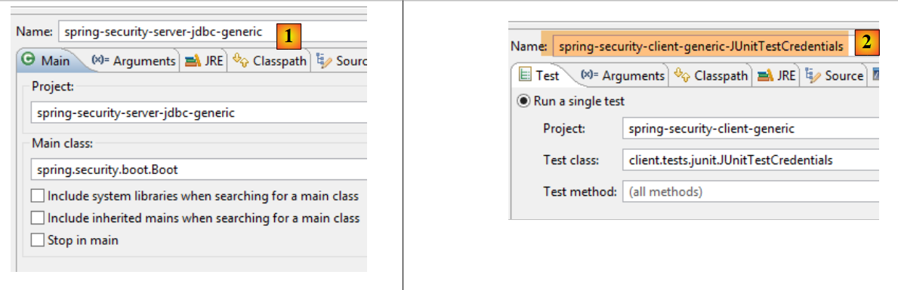 |
We then run the JUnit test [JUnitTestCredentials] with the runtime configuration [spring-security-client-generic-JUnitTestCredentials] [2]. The console results obtained are as follows:
checkUserUser: [code=111, trace=[Client,getResponse,65], exceptions=[{"className":"org.springframework.web.client.HttpClientErrorException","errorMessage":"403 Forbidden"}]
checkUserUnknown: [code=111, trace=[Client,getResponse,65], exceptions=[{"className":"org.springframework.web.client.HttpClientErrorException","errorMessage":"401 Unauthorized"}]
and the test passes:
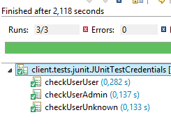 |
20.3.4.2. The [JUnitTestDao] test
The [JUnitTestDao] test is identical to what it was in the unsecured [spring-webjson-client-generic] project, except that now the methods of the [DAO] layer being tested all have the user [admin / admin] as their first parameter:
@SpringApplicationConfiguration(classes = AppConfig.class)
@RunWith(SpringJUnit4ClassRunner.class)
public class JUnitTestDao {
// Spring context
@Autowired
private ApplicationContext context;
// [DAO] layer
@Autowired
private IDao<Product> productDao;
@Autowired
private IDao<Category> categoryDao;
....
// users
static private Credentials admin;
@BeforeClass
public static void init() {
admin = new Credentials("admin", "admin");
}
@Before
public void clean() {
// We clear the database before each test
log("Clearing the database", 1);
// Empty the [CATEGORIES] table and, by cascade, the [PRODUCTS] table
daoCategory.deleteAllEntities(admin);
// clear the dictionaries
for (Long id : mapCategories.keySet()) {
mapCategories.remove(id);
}
for (Long id : mapProducts.keySet()) {
mapProducts.remove(id);
}
}
private List<Category> fill(int numCategories, int numProducts) {
// populate the tables
...
// Add the category—the products will also be
// inserted—we return the result at the same time
return daoCategory.saveEntities(admin, categories);
}
private Object[] showDataBase() throws BeansException, JsonProcessingException {
// list of categories
log("List of categories", 2);
List<Category> categories = categoryDao.getAllShortEntities(admin);
display(categories, context.getBean("jsonMapperShortCategorie", ObjectMapper.class));
// list of products
log("List of products", 2);
List<Product> products = productDao.getAllShortEntities(admin);
display(products, context.getBean("jsonMapperShortProduct", ObjectMapper.class));
// result
return new Object[] { categories, products };
}
...
All operations are performed using the [admin / admin] user, who is the only one with access rights to the secure web service.
We will run the test using the execution configuration named [spring-security-client-generic-JUnitTestDao]:
 |
The test passes, but we can see that it is slower than with the unsecured web service. Securing an application significantly increases its response times. There is one important factor affecting the performance of the secured web service: in the [AppConfig] class that configures it, we wrote:
@Override
protected void configure(HttpSecurity http) throws Exception {
// CSRF
http.csrf().disable();
// Is the application secure?
if (activateSecurity) {
// The password is transmitted via the Authorization: Basic xxxx header
http.httpBasic();
// The HTTP OPTIONS method must be allowed for everyone
http.authorizeRequests() //
.antMatchers(HttpMethod.OPTIONS, "/", "/**").permitAll();
// Only the ADMIN role can use the application
http.authorizeRequests() //
.antMatchers("/", "/**") // all URLs
.hasRole("ADMIN");
// no session
http.sessionManagement().sessionCreationPolicy(SessionCreationPolicy.STATELESS);
}
}
Line 17 has an impact. It determines whether or not the user is forced to authenticate on every access. If we comment it out, the duration of the JUnit test is significantly shorter, because the user [admin] only authenticates for the first test and not for subsequent ones (even if the HTTP authentication header is sent by the client, the server does not re-verify the user’s password).
20.4. The Eclipse project [spring-security-server-jpa-generic]
The secure web service will now be implemented by the [spring-security-server-jpa-generic] project, which is based on the [spring-jpa-generic] project that manages database access using Spring Data JPA:
 |
Above:
- the [DAO1] layer is the [DAO] layer that manages the [PRODUCTS] and [CATEGORIES] tables in the [dbproduitscategories] database. It has already been written;
- the [DAO2] layer is the [DAO] layer that manages the [USERS], [ROLES], and [USERS_ROLES] tables in the [dbproduitscategories] database. It has yet to be written;
The [spring-security-server-jpa-generic] project is initially created by cloning the previously studied project [spring-security-server-jdbc-generic]. In fact, the [web] and [security] layers remain unchanged because:
- The [DAO1 / Repositories / JPA] layer (already written) has the same interface as the [DAO1 / JDBC] layer;
- the [DAO2 / Repositories / JPA] layer (to be written) will have the same interface as the [DAO2 / JDBC] layer;
The [spring-security-server-jpa-generic] project is as follows:
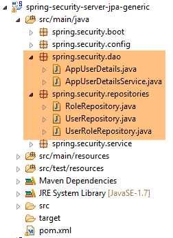 |
- the package [spring.security.repositories] implements the [repositories] layer;
- the [spring.security.dao] package implements the [dao2] layer; ### 20.4.1. The Maven project
The project is a Maven project configured by the following [pom.xml] file:
<project xmlns="http://maven.apache.org/POM/4.0.0" xmlns:xsi="http://www.w3.org/2001/XMLSchema-instance"
xsi:schemaLocation="http://maven.apache.org/POM/4.0.0 http://maven.apache.org/xsd/maven-4.0.0.xsd">
<modelVersion>4.0.0</modelVersion>
<groupId>dvp.spring.database</groupId>
<artifactId>spring-security-server-jpa-generic</artifactId>
<version>0.0.1-SNAPSHOT</version>
<name>spring-security-server-jpa-generic</name>
<description>Spring Security demo</description>
<properties>
<project.build.sourceEncoding>UTF-8</project.build.sourceEncoding>
<java.version>1.7</java.version>
</properties>
<parent>
<groupId>org.springframework.boot</groupId>
<artifactId>spring-boot-starter-parent</artifactId>
<version>1.2.3.RELEASE</version>
</parent>
<dependencies>
<!-- Spring Security -->
<dependency>
<groupId>org.springframework.boot</groupId>
<artifactId>spring-boot-starter-security</artifactId>
</dependency>
<!-- Web server / JSON -->
<dependency>
<groupId>dvp.spring.database</groupId>
<artifactId>spring-webjson-server-jpa-generic</artifactId>
<version>0.0.1-SNAPSHOT</version>
</dependency>
</dependencies>
<!-- plugins -->
<build>
<plugins>
<plugin>
<groupId>org.apache.maven.plugins</groupId>
<artifactId>maven-surefire-plugin</artifactId>
<version>2.18.1</version>
</plugin>
</plugins>
</build>
</project>
- lines 24–27: the dependency for the project’s [security] layer;
- lines 29–33: the dependency for the project’s [web] layer. The [spring-webjson-server-jpa-generic] project fully implements the [web] layer. This layer does not need to be written or modified;
In the end, the dependencies are as follows:
 |
20.4.2. The Spring configuration
 |
The [AppConfig] configuration file from the previous project [spring-security-server-jdbc-generic] is suitable. You simply need to add an additional configuration to it:
@Configuration
@EnableWebSecurity
@EnableJpaRepositories(basePackages = { "spring.security.repositories" })
@ComponentScan(basePackages = { "spring.security.dao", "spring.security.service" })
@Import({ spring.webjson.server.config.AppConfig.class })
public class AppConfig extends WebSecurityConfigurerAdapter {
- line 3: we declare the package that implements the [repositories] layer;
- line 4: the packages containing the Spring beans have the same name in the new project;
- line 5: in the previous project, the [spring.webjson.server.config.AppConfig] class was found in the [spring-webjson-server-jdbc-generic] dependency. Here, it will be found in the [spring-webjson-server-jpa-generic] dependency; ### 20.4.3. The JPA layer
 |
The JPA entities managed by the [JPA] layer are found in the [mysql-config-jpa-hibernate] project [2], which is a dependency of project [1]:
 |
The [User] class is the mapping of the [USERS] table:

- ID: primary key;
- VERSION: row versioning column;
- IDENTITY: a descriptive identifier for the user;
- LOGIN: the user's login;
- PASSWORD: the user's password;
package generic.jpa.entities.dbproduitscategories;
import generic.jdbc.config.ConfigJdbc;
import java.util.List;
import javax.persistence.CascadeType;
import javax.persistence.Column;
import javax.persistence.Entity;
import javax.persistence.FetchType;
import javax.persistence.GeneratedValue;
import javax.persistence.GenerationType;
import javax.persistence.Id;
import javax.persistence.OneToMany;
import javax.persistence.Table;
import javax.persistence.Transient;
import javax.persistence.Version;
import com.fasterxml.jackson.annotation.JsonIgnore;
@Entity
@Table(name = ConfigJdbc.TAB_USERS)
public class User implements AbstractCoreEntity {
// properties
@Id
@GeneratedValue(strategy = GenerationType.IDENTITY)
@Column(name = ConfigJdbc.TAB_JPA_ID)
protected Long id;
@Version
@Column(name = ConfigJdbc.TAB_JPA_VERSIONING)
protected Long version;
@Transient
protected EntityType entityType = EntityType.POJO;
// properties
@Column(name = ConfigJdbc.TAB_USERS_NAME, length = 30, nullable = false)
private String name;
@Column(name = ConfigJdbc.TAB_USERS_LOGIN, length = 30, unique = true, nullable = false)
private String login;
@Column(name = ConfigJdbc.TAB_USERS_PASSWORD, length = 60, nullable = false)
private String password;
// associated UserRoles
@OneToMany(fetch = FetchType.LAZY, mappedBy = "user", cascade = { CascadeType.ALL })
@JsonIgnore
private List<UserRole> userRoles;
// constructors
public User() {
}
public User(Long id, Long version, String identity, String login, String password) {
this.id = id;
this.version = version;
this.name = identity;
this.login = login;
this.password = password;
}
// ------------------------------------------------------------
// redefining [equals] and [hashcode]
...
// getters and setters
...
}
- line 23: the class implements the [AbstractCoreEntity] interface already used for the other entities;
- lines 34–35: the entity type. This property is not persisted in the database [@Transient];
- lines 38–43: the three basic properties of a user (name, login, password);
- lines 46–48: the list of the user’s roles. A user may have multiple roles. Similarly, we will see that a role can be associated with multiple users. Thus, in the JPA sense of the term, there is a [ManyToMany] relationship between the [User] and [Role] entities:
- A user can be assigned to multiple roles;
- A role can be associated with multiple users;
This [ManyToMany] relationship is implemented in the database by the join table [USERS_ROLES]. If a user U has a relationship with a role R, this relationship is stored in the [USERS_ROLES] table by recording the primary key pair of the entities (U,R). On the JPA side, the [ManyToMany] relationship linking the [User] and [Role] entities can be split into two relationships [ManyToOne, OneToMany]:
- (continued)
- a [ManyToOne] relationship from the [User] entity to the [UserRole] entity;
- a [OneToMany] relationship from the [UserRole] entity to the [UserRole] entity;
Similarly, the [ManyToMany] relationship linking the [Role] and [User] entities can be split into two [ManyToOne, OneToMany] relationships:
- (continued)
- a [ManyToOne] relationship from the [Role] entity to the [UserRole] entity;
- a [OneToMany] relationship from the [UserRole] entity to the [User] entity;
- line 48: the fact that a user has multiple roles is represented by a [OneToMany] relationship to the [UserRole] entity;
The [Role] class represents the [ROLES] table:

- ID: primary key;
- VERSION: row versioning column;
- NAME: role name. By default, Spring Security expects names in the form ROLE_XX, for example ROLE_ADMIN or ROLE_GUEST;
package generic.jpa.entities.dbproduitscategories;
import generic.jdbc.config.ConfigJdbc;
import java.util.List;
import javax.persistence.CascadeType;
import javax.persistence.Column;
import javax.persistence.Entity;
import javax.persistence.FetchType;
import javax.persistence.GeneratedValue;
import javax.persistence.GenerationType;
import javax.persistence.Id;
import javax.persistence.OneToMany;
import javax.persistence.Table;
import javax.persistence.Transient;
import javax.persistence.Version;
import com.fasterxml.jackson.annotation.JsonIgnore;
@Entity
@Table(name = ConfigJdbc.TAB_ROLES)
public class Role implements AbstractCoreEntity {
// properties
@Id
@GeneratedValue(strategy = GenerationType.IDENTITY)
@Column(name = ConfigJdbc.TAB_JPA_ID)
protected Long id;
@Version
@Column(name = ConfigJdbc.TAB_JPA_VERSIONING)
protected Long version;
@Transient
protected EntityType entityType = EntityType.POJO;
// properties
@Column(name = ConfigJdbc.TAB_ROLES_NAME, length = 30, unique = true, nullable = false)
private String name;
// associated UserRoles
@OneToMany(fetch = FetchType.LAZY, mappedBy = "role", cascade = { CascadeType.ALL })
@JsonIgnore
private List<UserRole> userRoles;
// constructors
public Role() {
}
public Role(Long id, Long version, String name) {
this.id = id;
this.version = version;
this.name = name;
}
// getters and setters
public Role(String name) {
this.name = name;
}
// ------------------------------------------------------------
// Overriding [equals] and [hashCode]
...
// getters and setters
...
}
- lines 42–44: the fact that multiple users can be associated with a role is represented by a [@OneToMany] relationship to the [UserRole] entity;
The [UserRole] class represents the [USERS_ROLES] table:

A user can have multiple roles, and a role can have multiple users. We have a many-to-many relationship represented by the [USERS_ROLES] table.
- ID: primary key;
- VERSION: row versioning column;
- USER_ID: user identifier;
- ROLE_ID: identifier of a role;
package generic.jpa.entities.dbproduitscategories;
import generic.jdbc.config.ConfigJdbc;
import javax.persistence.Column;
import javax.persistence.Entity;
import javax.persistence.FetchType;
import javax.persistence.GeneratedValue;
import javax.persistence.GenerationType;
import javax.persistence.Id;
import javax.persistence.JoinColumn;
import javax.persistence.ManyToOne;
import javax.persistence.Table;
import javax.persistence.Transient;
import javax.persistence.Version;
@Entity
@Table(name = ConfigJdbc.TAB_USERS_ROLES)
public class UserRole implements AbstractCoreEntity {
// properties
@Id
@GeneratedValue(strategy = GenerationType.IDENTITY)
@Column(name = ConfigJdbc.TAB_JPA_ID)
protected Long id;
@Version
@Column(name = ConfigJdbc.TAB_JPA_VERSIONING)
protected Long version;
@Transient
protected EntityType entityType = EntityType.POJO;
// A UserRole references a User
@ManyToOne(fetch = FetchType.LAZY)
@JoinColumn(name = ConfigJdbc.TAB_USERS_ROLES_USER_ID, nullable = false)
private User user;
// A UserRole references a Role
@ManyToOne(fetch = FetchType.LAZY)
@JoinColumn(name = ConfigJdbc.TAB_USERS_ROLES_ROLE_ID, nullable = false)
private Role role;
// constructors
public UserRole() {
}
public UserRole(User user, Role role) {
this.user = user;
this.role = role;
}
// ------------------------------------------------------------
// Override [equals] and [hashCode]
...
// getters and setters
...
}
- lines 34–36: implement the foreign key from the [USERS_ROLES] table to the [USERS] table;
- lines 38–41: implement the foreign key from the [USERS_ROLES] table to the [ROLES] table; ### 20.4.4. The [repositories] layer
 |
 |
The [UserRepository] interface manages access to [User] entities:
package spring.security.repositories;
import generic.jpa.entities.dbproduitscategories.Role;
import generic.jpa.entities.dbproduitscategories.User;
import org.springframework.data.jpa.repository.Query;
import org.springframework.data.repository.CrudRepository;
public interface UserRepository extends CrudRepository<User, Long> {
// list of roles for a user identified by their ID
@Query("select ur.role from UserRole ur where ur.user.id=?1")
Iterable<Role> getRoles(long id);
// List of roles for a user identified by their unique login
@Query("select ur.role from UserRole ur where ur.user.login=?1 and ur.user.password=?2")
Iterable<Role> getRoles(String login, String password);
// search for a user by their login
User findUserByLogin(String login);
}
- line 9: the [UserRepository] interface extends the Spring Data [CrudRepository] interface (line 7);
- lines 12-13: the [getRoles(long id)] method retrieves all roles for a user identified by their [id]
- lines 16-17: same as above, but for a user identified by their login and password;
- Line 20: to find a user by their login;
The [RoleRepository] interface manages access to [Role] entities:
package spring.security.repositories;
import generic.jpa.entities.dbproduitscategories.Role;
import org.springframework.data.repository.CrudRepository;
public interface RoleRepository extends CrudRepository<Role, Long> {
// Search for a role by name
Role findRoleByName(String name);
}
- line 7: the [RoleRepository] interface extends the [CrudRepository] interface;
- line 10: You can search for a role by its name. Note that the [Role] entity has a [name] field. The [findEntityByField] method is automatically implemented by Spring Data. Therefore, there is no need to implement the [findRoleByName] method here. You just need to declare it in the interface.
The [UserRoleRepository] interface manages access to [UserRole] entities:
package spring.security.repositories;
import generic.jpa.entities.dbproduitscategories.UserRole;
import org.springframework.data.repository.CrudRepository;
public interface UserRoleRepository extends CrudRepository<UserRole, Long> {
}
- Line 7: The [UserRoleRepository] interface simply extends the [CrudRepository] interface without adding any new methods; ### 20.4.5. The [DAO2] layer
 |
 |
The [DAO2] layer contains the same classes as the [DAO2] layer in the [spring-security-server-jdbc-generic] project discussed earlier in Section 20.2.2. Now, we simply need to implement them using the classes from the [repositories] layer.
The [AppUserDetails] class evolves as follows:
package spring.security.dao;
import generic.jpa.entities.dbproduitscategories.Role;
import generic.jpa.entities.dbproduitscategories.User;
import java.util.ArrayList;
import java.util.Collection;
import org.springframework.security.core.GrantedAuthority;
import org.springframework.security.core.authority.SimpleGrantedAuthority;
import org.springframework.security.core.userdetails.UserDetails;
import spring.data.infrastructure.DaoException;
import spring.security.repositories.UserRepository;
public class AppUserDetails implements UserDetails {
private static final long serialVersionUID = 1L;
// properties
private User user;
private UserRepository userRepository;
// local
private String simpleClassName = getClass().getSimpleName();
// constructors
public AppUserDetails() {
}
public AppUserDetails(User user, UserRepository userRepository) {
this.user = user;
this.userRepository = userRepository;
}
// -------------------------interface
@Override
public Collection<? extends GrantedAuthority> getAuthorities() {
Collection<GrantedAuthority> authorities = new ArrayList<>();
Iterable<Role> roles;
try {
roles = userRepository.getRoles(user.getId());
} catch (Exception e) {
e.printStackTrace();
throw new DaoException(167, e, simpleClassName);
}
for (Role role : roles) {
authorities.add(new SimpleGrantedAuthority(role.getName()));
}
return authorities;
}
...
}
- On line 31, the class constructor receives the [UserRepository] object as its second parameter, which allows the class to retrieve the roles of a given user (line 42);
The Spring component [AppUserDetailsService] evolves as follows:
package spring.security.dao;
import generic.jpa.entities.dbproduitscategories.User;
import org.springframework.beans.factory.annotation.Autowired;
import org.springframework.security.core.userdetails.UserDetails;
import org.springframework.security.core.userdetails.UserDetailsService;
import org.springframework.security.core.userdetails.UsernameNotFoundException;
import org.springframework.stereotype.Service;
import spring.data.infrastructure.DaoException;
import spring.security.repositories.UserRepository;
@Service
public class AppUserDetailsService implements UserDetailsService {
@Autowired
private UserRepository userRepository;
// local
private String simpleClassName = getClass().getName();
@Override
public UserDetails loadUserByUsername(String login) throws UsernameNotFoundException {
// search for the user by their login
User user;
try {
user = userRepository.findUserByLogin(login);
} catch (Exception e) {
throw new DaoException(168, e, simpleClassName);
}
// Found?
if (user == null) {
throw new UsernameNotFoundException(String.format("login [%s] does not exist", login));
}
// return the user details
return new AppUserDetails(user, userRepository);
}
}
- line 18: injection of the Spring component [userRepository], which will allow the service to return the user identified by their login, line 27;
Ultimately, we realize that we only need the [userRepository] and not the other two repositories [roleRepository, userRoleRepository]. These will be used in the next project, which aims to populate the [USERS, ROLES, USERS_ROLES] tables.
20.4.6. Tests
The secure web service is launched with the configuration named [spring-security-server-jpa-generic-hibernate-eclipselink] [1]. The [JUnitTestDao] test for the generic client is launched with the configuration named [spring-security-client-generic-JUnitTestDao] [2]:
 |
The tests pass.
20.5. The Eclipse project [spring-security-create-users]
 |
 |
20.5.1. The database
Running the project populates the [USERS, ROLES, USERS_ROLES] tables in the [dbproduitscategories] database:

|
The created credentials [login/passwd] are as follows: [admin/admin], [user/user], [guest/guest]. By default, passwords are encrypted.
|
20.5.2. Maven Configuration
The project is a Maven project configured by the following [pom.xml] file:
<?xml version="1.0" encoding="UTF-8"?>
<project xmlns="http://maven.apache.org/POM/4.0.0" xmlns:xsi="http://www.w3.org/2001/XMLSchema-instance"
xsi:schemaLocation="http://maven.apache.org/POM/4.0.0 http://maven.apache.org/xsd/maven-4.0.0.xsd">
<modelVersion>4.0.0</modelVersion>
<groupId>dvp.spring.database</groupId>
<artifactId>spring-security-create-users-jpa</artifactId>
<version>0.0.1-SNAPSHOT</version>
<packaging>jar</packaging>
<name>spring-security-create-users-jpa</name>
<description>creating users in the [dbproduitscategories] database</description>
<parent>
<groupId>org.springframework.boot</groupId>
<artifactId>spring-boot-starter-parent</artifactId>
<version>1.2.3.RELEASE</version>
</parent>
<dependencies>
<!-- Spring Security -->
<dependency>
<groupId>org.springframework.boot</groupId>
<artifactId>spring-boot-starter-security</artifactId>
</dependency>
<!-- spring-security-server-jpa-generic -->
<dependency>
<groupId>dvp.spring.database</groupId>
<artifactId>spring-security-server-jpa-generic</artifactId>
<version>0.0.1-SNAPSHOT</version>
</dependency>
</dependencies>
<properties>
<project.build.sourceEncoding>UTF-8</project.build.sourceEncoding>
<java.version>1.7</java.version>
</properties>
<build>
<plugins>
<plugin>
<groupId>org.apache.maven.plugins</groupId>
<artifactId>maven-surefire-plugin</artifactId>
<version>2.18.1</version>
</plugin>
</plugins>
</build>
</project>
- lines 22–25: dependency on the Spring Security framework. The password encryption algorithm is provided by this framework
- lines 27–31: dependency on the [spring-security-server-jpa-generic] project we just built. This project implements the [repositories] and [JPA] layers of the project;
In the end, the dependencies are as follows:
 |
20.5.3. The [console] layer
 |
Since the [repositories] and [JPA] layers are implemented by the [spring-security-server-jpa-generic] dependency, only the [console] layer remains to be implemented.
 |
- [AppConfig] is the project’s Spring configuration class;
- [CreateUsers] is the executable class that creates users and roles;
- [Base64Encoder] is a helper class for generating the Base64 code for a [login, password] pair. We have already used it. It is not needed for this project;
The Spring configuration class [AppConfig] is as follows:
package spring.security.install;
import generic.jpa.config.ConfigJpa;
import org.springframework.context.annotation.Configuration;
import org.springframework.context.annotation.Import;
import org.springframework.data.jpa.repository.config.EnableJpaRepositories;
@Configuration
@EnableJpaRepositories(basePackages = { "spring.security.repositories" })
@Import({ ConfigJpa.class })
public class AppConfig {
}
- Line 10: Specifies where to find the application's [repositories]. They are located in the [spring.security.repositories] package of the [spring-security-server-jpa-generic] dependency
- Line 11: Imports the beans from the [ConfigJpa] class, which configures the project’s [JPA] layer. This class is found in the [mysql-config-jpa-hibernate] dependency:
 |
The [CreateUsers] class is as follows:
package spring.security.install;
import generic.jpa.entities.dbproduitscategories.Role;
import generic.jpa.entities.dbproduitscategories.User;
import generic.jpa.entities.dbproduitscategories.UserRole;
import org.springframework.context.annotation.AnnotationConfigApplicationContext;
import org.springframework.security.crypto.bcrypt.BCrypt;
import spring.security.repositories.RoleRepository;
import spring.security.repositories.UserRepository;
import spring.security.repositories.UserRoleRepository;
public class CreateUsers {
public static void main(String[] args) {
// end
System.out.println("Processing...");
// creating three users
String[] logins = { "admin", "user", "guest" };
String[] passwds = { "admin", "user", "guest" };
String[] roles = { "admin", "user", "guest" };
// Spring context
AnnotationConfigApplicationContext context = new AnnotationConfigApplicationContext(AppConfig.class);
UserRepository userRepository = context.getBean(UserRepository.class);
RoleRepository roleRepository = context.getBean(RoleRepository.class);
UserRoleRepository userRoleRepository = context.getBean(UserRoleRepository.class);
for (int i = 0; i < logins.length; i++) {
// retrieve information for user #i
String login = logins[i];
String password = passwds[i];
String roleName = String.format("ROLE_%s", roles[i].toUpperCase());
// Does the role already exist?
Role role = roleRepository.findRoleByName(roleName);
// if it doesn't exist, create it
if (role == null) {
role = roleRepository.save(new Role(roleName));
}
// Does the user already exist?
User user = userRepository.findUserByLogin(login);
// if they don't exist, create them
if (user == null) {
// Hash the password with bcrypt
String crypt = BCrypt.hashpw(password, BCrypt.gensalt());
// save the user
user = userRepository.save(new User(null, null, login, login, crypt));
// Create the relationship with the role
userRoleRepository.save(new UserRole(user, role));
} else {
// The user already exists—does he have the requested role?
boolean found = false;
for (Role r : userRepository.getRoles(user.getId())) {
if (r.getName().equals(roleName)) {
found = true;
break;
}
}
// if not found, create the relationship with the role
if (!found) {
userRoleRepository.save(new UserRole(user, role));
}
}
}
// Close Spring context
context.close();
// end
System.out.println("Work completed...");
}
}
- lines 22–24: define the username, password, and role for three users;
- line 27: the Spring context is built from the [AppConfig] configuration class;
- lines 28–30: retrieve the references to the three [Repository] objects that can be used to create a user;
- line 31: creates the three users;
- lines 33–35: information to create user #i;
- line 37: we check if the role already exists;
- lines 39–41: if not, we create it in the database. It will have a name of the form [ROLE_XX];
- line 43: we check if the login already exists;
- lines 45–52: if the username does not exist, create it in the database;
- line 47: we encrypt the password. Here, we use the [BCrypt] class from Spring Security (line 8). We therefore need the archives for this framework. The [pom.xml] file includes this dependency:
<dependency>
<groupId>org.springframework.boot</groupId>
<artifactId>spring-boot-starter-security</artifactId>
</dependency>
- line 49: the user is persisted in the database;
- line 51: as well as the relationship linking them to their role;
- lines 55–60: if the login already exists, we check whether the role we want to assign to them is already among their roles;
- lines 62–64: if the role being searched for is not found, a row is created in the [USERS_ROLES] table to link the user to their role;
- We have not protected against potential exceptions. This is a helper class for quickly creating users;
To run the project, execute the run configuration named [spring-security-create-users-hibernate-eclipselink]:
 |
We have just built two secure web services:
- one with a [security / web / JDBC / MySQL] architecture;
- the other with a [security / web / Hibernate / MySQL] architecture;
We will now look at two other architectures:
- a [security / web / EclipseLink / SQL Server 2014 Express] architecture;
- an architecture [security / web / OpenJpa / Oracle Express]; ### 20.5.4. [security / web / EclipseLink / SQL Server] architecture
 |
 |
- In [1], we load the projects configuring a [JDBC / SQL Server] layer and a [JPA / EclipseLink / SQL Server] layer;
Note: Press Alt-F5, then regenerate all Maven projects.
We assume that the SQL Server DBMS is running and that the [dbproduitscategories] database has been generated. First, we need to populate the [USERS, ROLES, USERS_ROLES] tables in this database. To do this, run the execution configuration named [spring-security-create-users-hibernate-eclipselink]:
 | 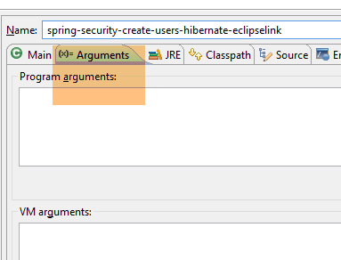 |
This should populate the three tables with data:
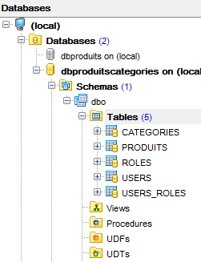 |  |
 |
 |
- Start the secure web service using the configuration named [spring-security-server-jpa-generic-hibernate-eclipselink][1];
- run the JUnitTestDao test with the configuration named [spring-security-client-generic-JUnitTestDao][2]. It should pass [3];
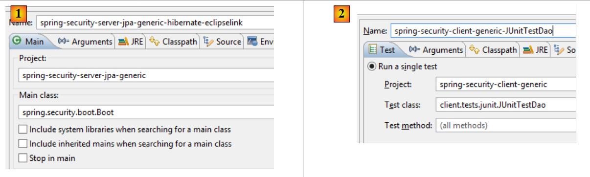 |
 |
20.5.5. Architecture [security / web / OpenJpa / Oracle Express]
 |
 |
- In [1], load the projects configuring a [JDBC / Oracle Express] layer and a [JPA / OpenJpa / Oracle Express] layer;
Note: Press Alt-F5, then regenerate all Maven projects.
We assume that the Oracle Express DBMS is running and that the [dbproduitscategories] database has been generated. First, we need to populate the [USERS, ROLES, USERS_ROLES] tables in this database. To do this, run the execution configuration named [spring-security-create-users-openjpa]:
 |  |
This should populate the three tables with data:
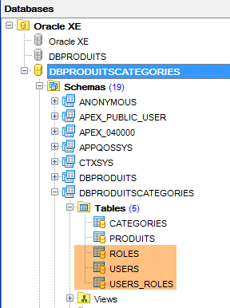 |  |
 |
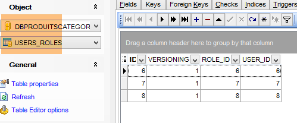 |
- Launch the secure web service using the configuration named [spring-security-server-jpa-generic-openjpa][1-2];
- run the JUnitTestDao test with the configuration named [spring-security-client-generic-JUnitTestDao][3]. It should pass [4];
 |
 |